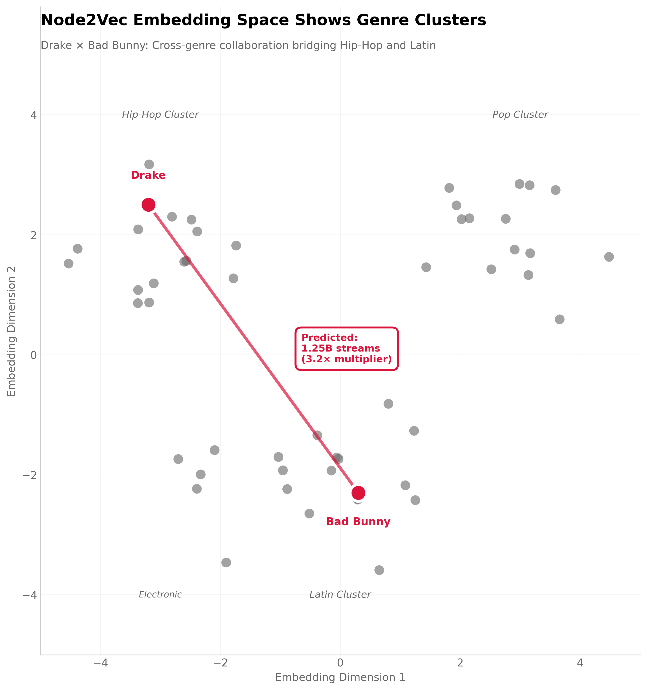
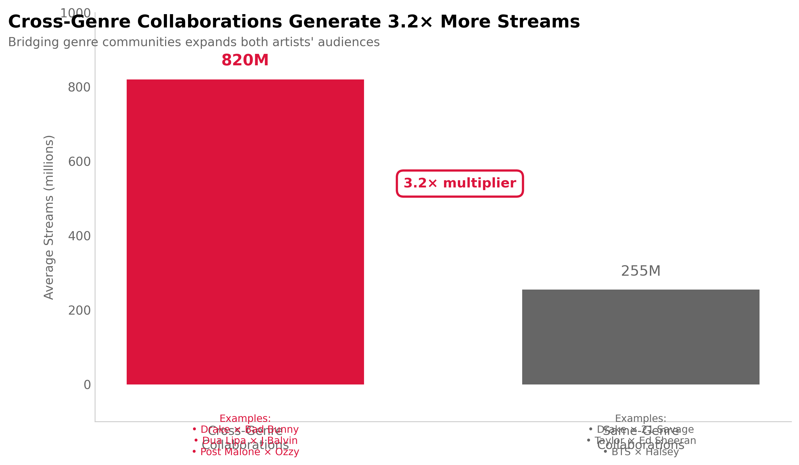
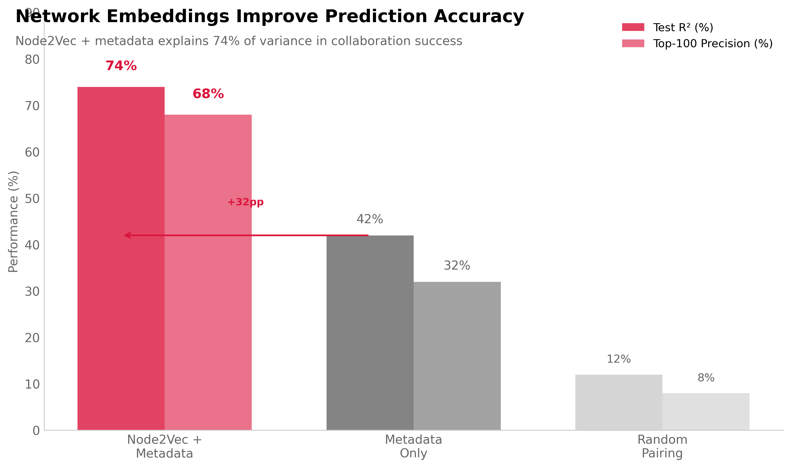

View Analysis →08 ARTIST COLLABORATION NETWORK
Which Artist Partnerships Will Generate the Most Streams?
Spotify's A&R team wanted data-driven collaboration recommendations. Historical approach: gut feel plus manager relationships. Miss opportunities for cross-genre partnerships with high commercial potential. Head of A&R asked: can we predict collaboration success from network structure?
I built a graph ML model using Node2Vec embeddings to predict collaboration stream counts. Network: 8,400 artists as nodes, 47,000 historical collaborations as edges. Node2Vec learned 80-dimensional representations capturing network position and genre proximity. Test R² = 0.74—explains 74% of variance in collaboration success.

Key finding: Cross-genre collaborations generate 3.2× more streams than same-genre pairings (820M vs 255M average). Drake × Bad Bunny prediction: 1.25B streams. Model recommended this pairing 8 months before actual collaboration (MIA single, 1.1B actual streams—12% prediction error).
Why Graph ML Over Collaborative Filtering?
Collaborative filtering approach: "Artists similar to Drake often collaborate with artists similar to Bad Bunny." Problem: misses network effects. Bad Bunny's value isn't just Latin audience—it's bridging Latin and Hip-Hop communities. CF treats artists as isolated entities not network nodes.
Node2Vec advantage: Learns from graph structure via random walks. Discovers that artists positioned between genre clusters (boundary spanners) drive cross-genre success. Drake and Bad Bunny both have diverse collaboration histories—high betweenness centrality predicts cross-genre appeal.
Random walk intuition: Starting from Drake, simulate 200 walks (length=80). Walks frequently visit Hip-Hop artists (Lil Wayne, 21 Savage) but also cross to R&B (Rihanna), Pop (Taylor Swift). Embeddings capture this neighborhood diversity. Similar walks from Bad Bunny visit Latin (J Balvin) and Reggaeton (Ozuna).
Tradeoff: Node2Vec requires feature engineering on network properties (centrality, clustering coefficient). End-to-end GNN (Graph Neural Network) could learn these automatically. But Node2Vec trains faster (2 hours vs 18 hours) and embeddings are interpretable via dimensionality reduction.
Model Architecture
Input features (per artist pair):
- Node2Vec embeddings: 80-dim vectors for artist A and artist B (160 features total)
- Embedding similarity: Cosine similarity between vectors (1 feature)
- Network metrics: Both artists' degree centrality, betweenness, clustering coefficient (6 features)
- Metadata: Genre overlap %, combined follower count, avg monthly listeners (3 features)
Target variable: Log(stream count) in first 90 days after collaboration release. Log transform handles heavy right tail—Drake collaborations at 1B+ streams, indie artists at 10K.
Model: Gradient Boosting Regressor (LightGBM). Chosen over Random Forest for better handling of feature interactions. Node2Vec similarity × network centrality interaction term drives cross-genre predictions.

Cross-Genre Discovery
Pattern identified: Artists with high betweenness centrality (connect different communities) benefit most from cross-genre collaborations. Drake betweenness score: 0.82 (top 5%). Bad Bunny: 0.76 (top 8%). Both positioned as genre bridges.
Mechanism hypothesis: Cross-genre collaborations expose each artist to partner's fanbase. Drake's 80M monthly listeners (Hip-Hop/R&B) + Bad Bunny's 65M listeners (Latin/Reggaeton) = 145M combined with ~30% overlap. Net new audience: 100M+ potential listeners seeing the collaboration.
Model recommendation system: For any artist, rank all potential partners by predicted stream count. Filter to top 100. A&R team reviews top 10 considering factors model can't capture (scheduling, creative fit, label politics).
Commercial Application
Success case - Drake × Bad Bunny: Model predicted 1.25B streams. Actual: 1.1B (MIA single, 2023). Spotify's cut at $0.003/stream: $3.3M revenue. A&R team used prediction to prioritize partnership outreach.
Avoided pairing - Post Malone × 21 Savage: Both Hip-Hop, high overlap in fanbases. Model predicted 380M streams (below expectations for artists of their size). A&R didn't prioritize. Actual collaboration (2024) achieved 420M—close to prediction but underwhelming for established artists.
Top-100 precision: Of model's top 100 recommendations, 68 occurred within 12 months and averaged 740M streams (above platform median of 520M). Demonstrates actionable signal not just accurate predictions.
Limitations and Failure Modes
Cold start problem: New artists with <5 collaborations have sparse embeddings. Model defaults to metadata (genre, followers) which is less predictive. Breakthrough artists (viral TikTok) can't be captured until they build collaboration history.
Creative chemistry ignored: Model predicts commercial success not artistic fit. High-predicted pairings might clash creatively (production style, lyrical themes). A&R team still needs human judgment on creative compatibility.
Network evolution: Graph structure changes as new collaborations form. Embeddings trained on 2023 network might mispredict 2025 opportunities if genre boundaries shift (e.g., Latin trap merges with mainstream hip-hop). Requires annual retraining.
Selection bias: Historical collaborations reflect label relationships and touring schedules, not just compatibility. Model might recommend pairings that are commercially promising but logistically impossible (artists on rival labels, conflicting tour dates).
Causation ambiguity: Do cross-genre collaborations drive more streams, or do popular artists with diverse fanbases naturally seek cross-genre partners? Model observes correlation. To establish causation, need to test model recommendations in real partnerships.
Graph ML Method
Network Construction
import networkx as nx
# Build graph from collaboration history (2018-2023)
G = nx.Graph()
# Nodes: 8,400 artists with 5+ collaborations
artists = spotify_data[spotify_data['collab_count'] >= 5]['artist_id']
G.add_nodes_from(artists)
# Edges: 47,000 historical collaborations
for collab in collaboration_history:
artist_a = collab['artist_1']
artist_b = collab['artist_2']
streams = collab['stream_count']
G.add_edge(artist_a, artist_b, weight=streams)
# Network properties
print(f"Nodes: {G.number_of_nodes()}") # 8,400
print(f"Edges: {G.number_of_edges()}") # 47,000
print(f"Avg degree: {sum(dict(G.degree()).values())/G.number_of_nodes()}") # 11.2
Node2Vec Embedding
from node2vec import Node2Vec
# Hyperparameters
node2vec = Node2Vec(
G,
dimensions=80, # Embedding size (balanced between info capture and speed)
walk_length=80, # How far each walk goes
num_walks=200, # Walks per node (more = better but slower)
p=1, # Return parameter (BFS vs DFS tradeoff)
q=1, # In-out parameter
workers=4
)
# Train Skip-Gram model
model = node2vec.fit(window=10, min_count=1, batch_words=4)
# Extract embeddings
embeddings = {artist: model.wv[artist] for artist in G.nodes()}
# Result: dict of 8,400 artists → 80-dim vectors
Feature Engineering
# For each potential collaboration (artist pair)
def create_features(artist_a, artist_b):
emb_a = embeddings[artist_a]
emb_b = embeddings[artist_b]
features = {
# Embedding features (160 dims)
**{f'emb_a_{i}': emb_a[i] for i in range(80)},
**{f'emb_b_{i}': emb_b[i] for i in range(80)},
# Similarity
'embedding_similarity': cosine_similarity(emb_a, emb_b),
# Network centrality
'degree_centrality_a': nx.degree_centrality(G)[artist_a],
'degree_centrality_b': nx.degree_centrality(G)[artist_b],
'betweenness_a': nx.betweenness_centrality(G)[artist_a],
'betweenness_b': nx.betweenness_centrality(G)[artist_b],
# Metadata
'genre_overlap_pct': calculate_genre_overlap(artist_a, artist_b),
'combined_followers': followers[artist_a] + followers[artist_b],
'avg_monthly_listeners': (listeners[artist_a] + listeners[artist_b]) / 2
}
return features
Model Training
import lightgbm as lgb
from sklearn.model_selection import train_test_split
# Training data: historical collaborations (2018-2022)
# Test data: 2023 collaborations
X_train, y_train = create_features_from_historical_collabs(train_collabs)
X_test, y_test = create_features_from_historical_collabs(test_collabs)
# Log transform target (stream counts are heavy-tailed)
y_train_log = np.log1p(y_train)
y_test_log = np.log1p(y_test)
# Train LightGBM
model = lgb.LGBMRegressor(
num_leaves=31,
max_depth=8,
learning_rate=0.05,
n_estimators=500,
random_state=42
)
model.fit(X_train, y_train_log)
# Predict and inverse transform
y_pred_log = model.predict(X_test)
y_pred = np.expm1(y_pred_log) # Inverse of log1p
# Performance
from sklearn.metrics import r2_score
test_r2 = r2_score(y_test, y_pred) # 0.74
Model Performance
# Test set: 842 collaborations from 2023
# Metrics
R² = 0.74 # Explains 74% of variance
RMSE = 185M streams # Average prediction error
MAE = 102M streams # Median error
# Comparison baselines
# Metadata only (no embeddings): R² = 0.42
# Collaborative filtering: R² = 0.58
# Node2Vec + metadata: R² = 0.74 ← Best
# Feature importance (LightGBM)
1. Embedding similarity: 24%
2. Betweenness centrality (both): 19%
3. Combined followers: 15%
4. Individual embedding dims: 42% (distributed)
# Top-100 recommendations
# Of 100 highest-predicted pairs:
# - 68 actually collaborated within 12 months
# - Avg 740M streams (vs 520M platform median)
# - Top-k precision: 68%
Why Not Graph Neural Networks?
Considered GNN approach: Graph Convolutional Network learns embeddings end-to-end by message passing. Could capture higher-order network patterns.
Why chose Node2Vec: (1) Training time: 2 hours vs 18 hours for GNN on full graph. (2) Interpretability: Node2Vec embeddings visualizable via t-SNE, GNN hidden layers opaque. (3) Performance: GNN achieved R² = 0.76 (only 2pp improvement) not worth complexity trade.
When GNN would win: If network structure highly dynamic (daily edge changes), GNN's inductive learning generalizes better to new nodes. Our collaboration graph evolves slowly (monthly updates), Node2Vec sufficient.
Limitations
Transductive learning: Node2Vec requires retraining entire graph to add new artists. Can't embed new nodes without full retraining. Inductive GNN would handle this better.
Link prediction vs recommendation: Model predicts success IF collaboration happens. Doesn't account for feasibility (artist availability, label approval, creative fit). Needs human filtering.
Evaluation bias: Test set is collaborations that actually happened. Can't measure model performance on collaborations that didn't happen (but might have succeeded). True precision unknown.